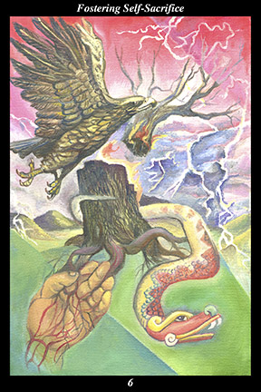

 | IMAGE: A tree is struck by lightning and breaks apart. The upper part of the tree falls away and is carried off by the storm, accompanied by an eagle ascending into the sky with it. A serpent descends into the earth, carrying the trunk of the tree away with it. Only those most delicate roots of the tree that extend out and become the veins of the ancestors’ hand ultimately remain. |
INTERPRETATION:
This hexagram represents a time of great change that holds no immediate opportunities for you to advance. The tree represents the continuity of a way of life. The lightning storm represents circumstances beyond people’s control. Taken together, they symbolize the ending of something and a breakdown of customary routines, polarizing people and making them insecure and distrustful. The upper part of the tree flying off into the sky with the eagle spirit means that those above have noble intentions and pursue them without compromise. The lower part of the tree descending into the earth with the serpent spirit means that those below have noble intentions and pursue them without compromise. The roots transforming into the veins of the ancestors’ hand mean that true continuity can only be found at this time in your grasp, your personal comprehension, of the inner path of the ancients. Taken together, these symbols mean that you wait for the turbulence of the times to calm, neither revealing your intentions nor acting on your decisions.
ACTION:
It is a time for experiencing the ancestors’ way of life as a living vision of spiritual work. Even though many around you view spirit as a relic of primitive belief, you must resist the movement toward materialism and cynicism. There are dramatic fluctuations in gain and loss now and people are unable to guess where fortune and misfortune will strike next. While people may make a show of unity and cooperation, behind the scenes individuals and factions compete fiercely for advantage. Because all sides perceive their motives justified, they resist reconciliation with all their might. In such a climate, it is easy to be swept up in the passions of the moment and dragged back and forth indefinitely. Because you see your way of life as a vital act of spiritual work, however, you are moved neither by ambition nor antagonism: seeking to bring the greatest
benefit to the greatest number, you do not hesitate to place the need of others above your own. Restraining the impulsive and determined nature of the masculine force in this way strengthens and ennobles your spirit, forming the seeds of future success for your endeavor.
INTENT:
One of the ancients’ great teachings is that acting out of self-interest to the detriment of the whole injures all. Because profit brings gain for one at the expense of many and
benefit brings gain for many at the expense of one, the logic of
benefit is superior to the logic of profit. Because self-interest cannot injure the whole without injuring oneself and self-sacrifice cannot
benefit the whole without benefiting oneself, the logic of self-sacrifice is superior to the logic of self-interest. Do not be tempted to make a move at this time, since your motives will be called into question and you will become embroiled in conflict and hostility. Wait patiently, hone your skills, broaden your experience: by not acting prematurely, you will be respected and sought after when the window of opportunity next opens. While every ending begets a new beginning, the moment of that begetting cannot be rushed.
SUMMARY:
In the midst of chaos and confusion, hold firm to your belief in serving others. Focus on the well-being of those around you and your needs will be met. Set an example by refusing to worry about things outside your control. Do not try to advance at this time. Be an asset to others. Strengthen your foundation, broaden your alliances. The momentum is against you for a while longer.
THE LINE CHANGES
1° An all-or-nothing attitude is admirable at the end but regrettable at the beginning. Expecting immediate trust and plain speech without shared experiences is naive and opens you to manipulation. Do not underestimate others or overestimate yourself.
2° The situation is much more complicated than you first thought, the tangle of relationships more knotted than you imagined. Whatever you say to one will be repeated to all—show too much weakness or too much strength to one and it will be reported to all. This will be a long, slow march.
3° You cannot overstep the bounds without looking amateurish. You cannot think of this as a stepping stone to something better without ruining your reputation. You are boxed in and will lose face no matter what you do—when you cannot move or stand still, it is time to learn to do something new.
4° You have taken on a hopeless task—the agreement you seek is not to be fashioned among all these competing interests. Each faction has taken a position long ago that they cannot relinquish. You arrived too late—best to leave early.
5° Holding a position of strength, still you respond to all with graciousness and respect. When winning allies, you brood like a mother hen—when confronting opponents, you move like a rushing tiger. Now, what will you forge?
6° When there is a shakeup beyond your control, the agitation and uncertainty filling the air make it impossible to accomplish anything. If you are closely aligned with the past, it is best to leave now. If you are new on the scene, you may find a place when the dust settles.